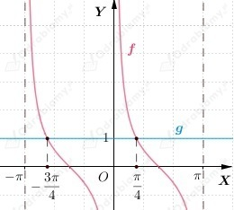
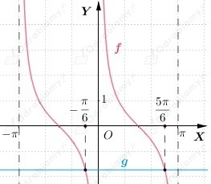
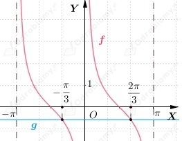

Z wykresu funkcji cotangens przedstawionego w podręczniku na stronie 32 możemy odczytać wybrane własności funkcji f(x)=ctgx.
Zatem
Funkcja f maleje w każdym z przedziałów
Na podstawie wykresu funkcji cotangens możemy odczytać, że środki symetrii, to punkty o współrzędnych
| Przypomnijmy, że dla
|
a)
b)
c)
a)
Zauważmy, że rozwiązaniem podanego wyżej równania są punkty przecięcia wykresu funkcji f(x)=ctgx oraz funkcji stałej g(x)=1.
Naszkicujmy wykres funkcji

Uwzględniając okresowość funkcji cotangens, z wykresu funkcji odczytujemy, że
b)
Zauważmy, że rozwiązaniem podanego wyżej równania są punkty przecięcia wykresu funkcji f(x)=ctgx oraz funkcji stałej g(x)=-√3.
Naszkicujmy wykres funkcji

Uwzględniając okresowość funkcji cotangens, z wykresu funkcji odczytujemy, że
c)
Zauważmy, że rozwiązaniem podanego wyżej równania są punkty przecięcia wykresu funkcji f(x)=ctgx oraz funkcji stałej g(x)=-√3/3.
Naszkicujmy wykres funkcji

Uwzględniając okresowość funkcji cotangens, z wykresu funkcji odczytujemy, że